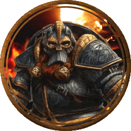
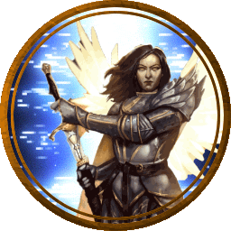
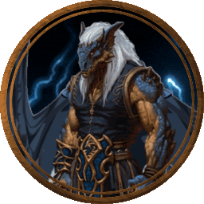
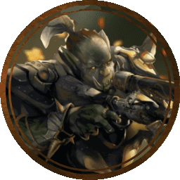
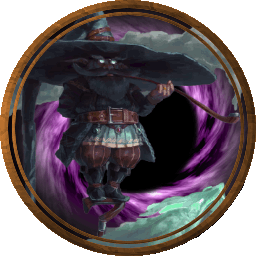

The Counsel of Giants
The Counsel of Giants is made up of six main Ancient Giants as well as the giantkin and others under them. The Main Six of the counsel are originally from the same plane of existance as the
Royals. They are the direct children on the Royal known as "King", as such they have extraordinary power that rivals if not surpasses many of the gods. Each one of the six is also the embodyment of
a certain aspect, the aspects being "Might", "Elements", "Forge", "Hunt", "Speed", "Trickery". While the Counsel of Giants has not made any direct apperances as of yet, their chose group of heroes has. These 5 heroes of the Giants
have clashed with the main party several times and in the end they worked together to finally end the conflict between the Giants and Dragons
Known Important Members
Brangstrom

Brangstrom is an 18th Level Dwarf Cleric. He is the blacksmith and the one on the team that keeps their gear in check. Blessed by the Ancient Giant of the Forge Brangstrom's
ability to craft gear is almost unmatched. He is able to call upon the heat of the forge in combat aswell melting his enemies as easy as the metal he works with. He has also earned himself a minor
divinity allowing him to turn into the embodiement of the forge, a large elemental of fire and molten metal. Despite being the weakeast of the team in terms of combat, he is not slouch when it comes
to a fight.
Sarah

Sarah is an 18th Level Aasimar Paladin. She is the maing fighter and tank of the group . Blessed by the Ancient Giant of Might Sarah's
ability to fight and take hits is impressive. She is able to call upon increased stregth combat getting to a point where she can level mountains with her fists. She has also earned himself a minor
divinity allowing him to turn into the embodiement of strength, she becomes a mighty angel with an enchanted Greatsword, in this form she is even stronger and faster than her normal form.
Seven-Ti

Seven-Ti is an 18th Level Dragonborn Monk. He is the main damage dealer of the group. He is able to quickly get in and out of fights dealing huge amounts of damage over time.
Surprisingly he was blessed by the Giant of Speed despite technically being a dragonkin. Seven-Ti is actually a desserter of the Dragon faction as he no longer belived in their methods. Choosing
to use his fists over traditional methods many enemies do not expect much of him, but his fists themselves are stronger than most weapons enchanted or otherwise. He has also earned himself a minor
divinity allowing him to turn into the embodiement of speed, while his physical form does not change his muscles and internals are rewired and strengthened allowing him to move faster than before.
Torgon

Torgon is an 18th Level Orc Rogue. He is a trained scout and has his trusty companign a Behir named Claw. Together they are able to spot, ambush, and take out many enemies long
before they are even noticed. Blessed by the Giant of the hunt, he is able to track and find any even across other planes. He has also earned himself
a minor divinity allowing him and Claw to combine. Together they form a hybrid with the top half of a giant and the bottom half of a Behir. Despite his large size in this form he is able to turn invisable and move
just as stealthy as before, his attacks are stronger and he becomes better in close combat making up for one of his greatest weakness.
Weiss

Weiss is an 18th Level Gnome Wizard. He is a master of illusions and tricks. While he is more than capabale of destroctive magic he prefers to toy with his opponets as he turns his illusions into real threats then back to illusions.
Weiss was blessed by the Giant of Trickery making his mastery of illusions even greater allowing him to make more complex and longer lasting illusions. He has also earned himself a minor divinity, turning him
into a creature of shadow. In this form he is even harder to hit and his enemies very shadow turn against them.